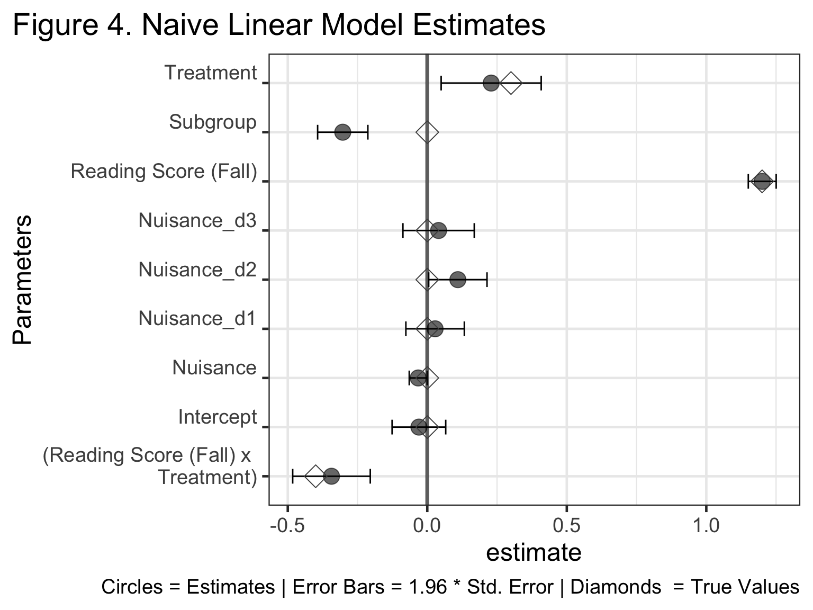
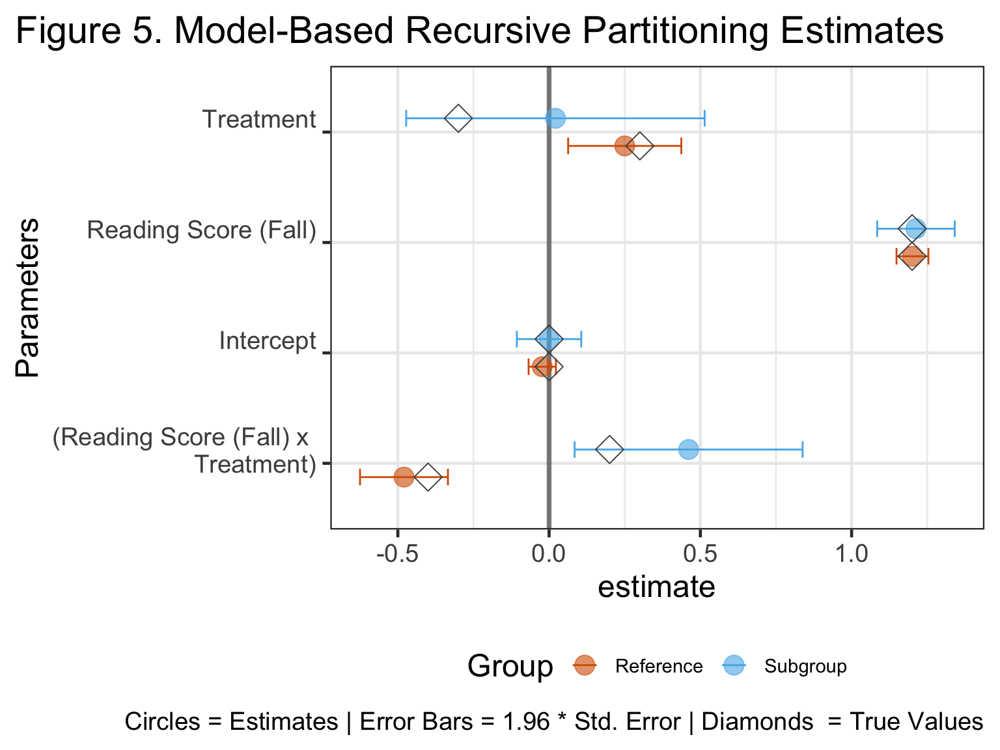

THIS IS A ROUGH DRAFT RIGHT NOW, ONLY PUBLIC IN ORDER TO SHOW FOR PRESENTATION TO EDLD 650
Getting Started
This project uses {MASS} in stimulating data,
{tidyverse} for data manipulation and plotting,
{partykit} for model-based recursive partitioning, the
other three—{dials}, {rsample}, and
{gardenr}—are for tuning the model-based recursive
partitioning algorithm.
All of these are available on CRAN, but installation of
{gardenr} will require download from my GitHub account, as it’s not
yet on CRAN.
Goal of the Project:
The goal of the project is to demonstrate a situation whereby unexpected subgroup effects can lead to bias in regression discontinuity (RD) parameter estimates. Because I’d like to keep a general audience and also to give a nod to my educational training, I’m going to explain the simulated data as effects in the data (i.e., I will use education-specific variable names). Obviously, though, these data are simulated, meaning the findings are agnostic to discipline.
Simulate
Simulations are really useful tools. In the real world, no one can tell you what’s actually underlying many processes. With simulation, however, I can make up a theoretically reasonable scenario and then demonstrate the effect that would have on statistical inference.
Narrative
Let’s imagine we have a fall reading intervention given to a sample of n = 4000 students. Students at the bottom quarter of a normally distributed test are enrolled in an intensive reading intervention for the remainder of the school year; other students continue with “treatment as usual” (i.e., their normal suite of English classes). At the end of the spring term, all students will take a variant of the test again.
The intervention’s main goal is to raise scores among students at the bottom of the distribution. This is an equity intervention, meaning it’s goal is to help everyone eligible (based on fall reading test); further, those at the lower end of the distribution of eligible students are given progressively more support.
Let’s also imagine there is a subgroup of students that make up ~15% of the student body (~267 students). This could be any form of minority based on mental health, gender identity, racial/ethnic identity, religious identity, immigrant status, etc.
In such situations, individuals in the subgroup are particularly vulnerable to worse educational outcomes because information is frequently tailored to the majority group either implicitly or explicitly. For example, if this intervention was made primarily by individuals outside this subgroup or teachers implementing the intervention were not from this group, we can imagine content or delivery of this may not resonate with that subgroup as well as the primary group. Perhaps this happens from assumptions about student backgrounds or in other ways. The reason why this hypothetical intervention is not equally effective does not matter, but let’s assume it is not.
In this case, the intervention may not work as expected for this student subgroup. Specifically, perhaps this intervention is written in a way that actively engages students in the reference group while leaving out students in the subgroup. This means the implicit assumption of the intervention is not that it is aimed at helping students at the bottom of the distribution, but it is helping students of the majority group at the bottom of the distribution. The distinction is important.
With content implicitly tailored to the reference group, the intervention may work as expected: everyone in the intervention is helped a little bit and those most in need (i.e., with the lowest fall reading score) get more out of the intervention than those closer to the threshold. For those in the subgroup, engagement is actively stifled by the tailoring to majority groups. Thus, those who improve in the subgroup will be those who were internally motivated the most. We can imagine this would be the students closest to the cutoff of eligibility. Explicitly, this means that— for the subgroup—the intervention is actively increasing variance in spring reading scores by having progressively greater iatrogenic effects on those with the lowest fall reading score. In other words, the intervention is great for the reference group in the population, but harmful to those in the subgroup.
Converting Narrative to Data
Distributions
Alongside a few assumptions, we have established all of the parameters necessary for simulation in the prior narrative. Let’s assume all variables are standardized with a mean of 0 and a standard deviation of 1; these variables are also uncorrelated. Student group — a dichotomous variable—was made with thresholds of the quantile distribution function, basically binning simulated data where 15% was put in the subgroup and 85% was in the reference. A continuous “nuisance” variable was made to be fully uncorrelated with other variables and the outcome; similarly, a 4-level categorical nuisance variable (which could be represented by dummy coding) was also simulated.
Effects
This model was used to simulate data:
\[ \begin{aligned} \operatorname{SpringReading} = \\ \alpha + \beta_{1}(\operatorname{FallReading}) + \beta_{2}(\operatorname{StudentGroup}_{\operatorname{Subgroup}}) + \\ \beta_{3}(\operatorname{Treatment}_{\operatorname{Intervention}}) + \beta_{4}(\operatorname{FallReading} \times \operatorname{Treatment}_{\operatorname{Intervention}}) + \\ \beta_{5}(\operatorname{FallReading} \times \operatorname{StudentGroup}_{\operatorname{Subgroup}}) + \\ \beta_{6}(\operatorname{StudentGroup}_{\operatorname{Subgroup}} \times \operatorname{Treatment}_{\operatorname{Intervention}}) + \\ \beta_{7}(\operatorname{FallReading} \times \operatorname{StudentGroup}_{\operatorname{Subgroup}} \times \operatorname{Treatment}_{\operatorname{Intervention}}) + \epsilon \end{aligned} \]
Five non-zero combinations of effects were specified.
- \(\beta_{1} = 1.2\)
- \(\beta_{3} = 0.3\)
- \(\beta_{4} = -0.4\)
- \(\beta_{6} = -0.6\)
- \(\beta_{7} = 0.7\)
Excluding nuisance variables, two effects were set at 0:
- \(\beta_{2} = 0\)
- \(\beta_{5} = 0\)
show code
effs <-
data.frame(
a = 1, # loading of intercept spring score (NOT ACTUAL INTERCEPT)
b1 = 1.2, # fall reading
b2 = 0.3, # intervention
b3 = -0.4, # (fall reading x intervention)
b4 = 0, # student group
b5 = 0, # (fall reading x student group)
b6 = -0.6, # (intervention x student group)
b7 = 0.6, # ((fall reading x intervention) x student group)
b8 = 0, # continuous nuisance variable
b9 = 0, # categorical nuisance variable
e = 1 # loading of error term (NOT ACTUAL ERROR TERM)
)
Code to Simulate
I’ve provided code here for anyone interested in the simulation call. If you’re more visual, the plots below will show the results of the simulation better.
show code
dat <-
MASS::mvrnorm(
n = number_of_cases,
mu = rep(0, ncol(vcov_matrix)),
Sigma = vcov_matrix,
empirical = TRUE
) %>%
data.frame() %>%
rename(
underlying_demo_dist = X1,
reading_fall = X2,
nuisance = X3
) %>%
mutate(
student_group =
ifelse(
underlying_demo_dist <= qnorm(1-proportion_reference_group),
1, 0),
treatment =
ifelse(
reading_fall <= qnorm(threshold_score),
1, 0),
error = rnorm(n = nrow(.), 0, 1),
nuisance = rnorm(n = nrow(.), 0, 1),
nuisance_categorical = rbinom(nrow(.), 3, 0.5),
intercept_outcome = 0,
# equation for the outcome
reading_spring =
effs$a*intercept_outcome +
effs$b1*reading_fall +
effs$b2*treatment +
effs$b3*reading_fall*treatment +
effs$b4*student_group +
effs$b5*reading_fall*student_group +
effs$b6*treatment*student_group +
effs$b7*reading_fall*treatment*student_group +
effs$b8*nuisance +
effs$b9*nuisance_categorical +
effs$e*error,
student_group =
factor(
student_group,
levels = 0:1,
labels = c('Reference', 'Subgroup')
),
treatment =
factor(
treatment,
levels = 0:1,
labels = c('Control', 'Intervention')
),
nuisance_categorical =
factor(
nuisance_categorical,
levels = 0:3,
labels = letters[1:4]
)
) %>%
select(
reading_spring,
reading_fall,
treatment,
student_group,
nuisance,
nuisance_categorical
) %>%
tibble()
Plots of Simualted Data
show code
project_theme <-
list(
theme_bw(base_size = 18),
theme(
plot.title.position = 'plot',
legend.text = element_text(size = 11),
legend.position = 'bottom'
),
colorblindr::scale_color_OkabeIto(order = c(6, 2, 7, 5)),
colorblindr::scale_fill_OkabeIto(order = c(6, 2, 7, 5))
)
True Structure
This is the structure of the actual data. We can see that the intervention helped boost the performance of those in the reference group across the board and it helped those at the lowest end the most. For the subgroup, we see the exact opposite effect: universal negative effect with the least detriment to those lower on fall reading score.
show code
fully_specified_plot <-
dat %>%
mutate(
reading_fall_bin = plyr::round_any(reading_fall, 0.2),
plt_intx = paste0(student_group, ' & \n', treatment)
) %>%
ggplot(
aes(
x = reading_fall,
y = reading_spring,
shape = student_group
)
) +
geom_abline(
intercept = 0,
slope = 1,
size = 1.5,
linetype = 2,
alpha = 0.4
) +
geom_smooth(
aes(group = plt_intx, color = plt_intx),
size = 2,
alpha = 0.6,
se = FALSE,
method = 'lm'
) +
labs(
y = 'Spring Reading Score',
x = 'Fall Reading Score',
color = element_blank(),
shape = element_blank(),
title = 'Figure 1. Association of Fall and Spring Reading',
subtitle = 'Associations by Treatment Condition & Subgroup'
) +
facet_wrap(vars(student_group)) +
project_theme
fully_specified_plot
Naive Estimate
If a researcher wanted to see the raw effect of this intervention, they might plot this without the subgroups. Because the subgroup only contains 15% of the sample, this intervention still looks effective; as shown above, though, it’s effect is heterogenous when specified properly.
show code
naive_specified_plot <-
dat %>%
ggplot(
aes(
x = reading_fall,
y = reading_spring,
shape = treatment
)
) +
geom_abline(
intercept = 0,
slope = 1,
size = 1.5,
linetype = 2,
alpha = 0.6
) +
geom_smooth(
aes(
group = treatment,
color = treatment
),
size = 2,
alpha = 0.6,
se = FALSE,
method = 'lm') +
labs(
y = 'Spring Reading Score',
x = 'Fall Reading Score',
color = element_blank(),
shape = element_blank(),
title = 'Figure 2. Association of Fall and Spring Reading',
subtitle = 'Associations by Treatment Condition'
) +
project_theme
naive_specified_plot
Fit Models
Now that we’ve had a quick visual exploration, let’s fit a traditional RD model. Let’s also assume that the researcher is able to identify the subgroup of students and decides to account for the effects as a dummy-coded fixed effect, the most common approach to control for a subgroup effect by analysts. After all, if the researcher could not identify these groups, then no method will help you and you’ll need a survey methodologist.
Before I fit the models, I have to do some housekeeping.
Specifically, because we’re going to use model-based recursive
partitioning, I like to separate my data into training and testing. I
also need to define a function for cross-validation I call it
cv_it() and it’s a simplified version of
cross_validate_it() from my {gardenr} package.
The only difference is this uses lmtree() instead of
lmertree(), which is because we rely on single level data
instead of a multilevel model.
show code
set.seed(143627)
sim_split <- rsample::initial_split(dat)
training_data <- rsample::training(sim_split)
comparison_testing <- rsample::testing(sim_split)
show code
### cross validation function
cv_it <-
function (
cv_obj,
seed = 713,
mod_formula,
tuning_grid,
verbose = FALSE,
...)
{
set.seed(seed)
number_cv_sets <- length(cv_obj$splits)
results <- tibble()
for (j in 1:nrow(tuning_grid)){
max_depth_temp <- tuning_grid$maxdepth_par[[j]]
alpha_temp <- tuning_grid$alpha_par[[j]]
trim_temp <- tuning_grid$trim_par[[j]]
rmse_temp <- vector(mode = 'numeric', length = length(number_cv_sets))
mae_temp <- vector(mode = 'numeric', length = length(number_cv_sets))
for (i in 1:number_cv_sets) {
temp_analysis <- analysis(cv_obj$splits[[i]])
fitted_result <- lmtree(
data = temp_analysis,
formula = mod_formula,
maxdepth = max_depth_temp,
alpha = alpha_temp,
trim = trim_temp,
...
)
temp_assessment <- assessment(cv_obj$splits[[i]])
temp_predictions <- predict(fitted_result,newdata = temp_assessment)
temp_new_Y <- temp_assessment[[paste0(formula.tools::lhs(mod_formula))]]
rmse_temp[i] <- rmse(observed_y = temp_new_Y, predicted_y = temp_predictions)
mae_temp[i] <- mae(observed_y = temp_new_Y, predicted_y = temp_predictions)
if(verbose == TRUE) {message(paste0("cv index ", i, " complete"))}
}
mean_rmse <- mean(rmse_temp)
mean_mae <- mean(mae_temp)
se_rmse <- sd(rmse_temp)/sqrt(length(rmse_temp))
se_mae <- sd(mae_temp)/sqrt(length(mae_temp))
temp_results <-
tuning_grid[j, ] %>%
mutate(
grid_index = j,
mean_rmse = mean_rmse,
se_rmse = se_rmse,
mean_mae = mean_mae,
se_mae = se_mae
) %>%
select(grid_index, everything())
results <- bind_rows(results, temp_results)
if(verbose == TRUE) {message(paste0("hyperparameter index ", j, " complete"))}
}
return(results)
}
Linear Models
Naive RD
Here’s our naive RD model. It has a fixed effect for fall reading, treatment condition, their interaction, and the student subgroup. For treatment condition, the treatment as usual group was used as the reference in dummy coding. For the student subgroup, the larger group was used as the reference group in dummy coding. Estimates of these parameters therefore indicate the fixed effect of the treatment group compared to the control and the student subgroup compared to the reference group, respectively.
Overparameterized RD
An alternative approach that a researcher might take is to fit an overparameterized RD model. Many would advise against it, but I’m going to estimate that model too. This model is similar to above, however it includes all possible interactions of available data. A good analyst should know not to run this model, but I’m representing the two extremes here: over- and under-specification of a linear model.
Model-Based Recursive Partitioning
Hyperparameter tuning
I’m specifying a maximum entropy tuning grid. This basically is going to take 25 combinations of hyperparameters to cover the parameter space of (in this case) 3 parameters — maximum depth, alpha, and trim. Maximum depth is how tall the tree can grow; higher numbers mean the model can find more subgroups, lower numbers mean the models can find fewer. Even if the model has a large maximum depth, it will only continue to split if other splitting rules tell it to do so. Alpha is the significance needed to justify a split. The null hypothesis is that a single model explains the data equally well compared to linear models fit to the subgroups separately. Finally, trim, which is the proportion of the data which is excluded from the tests of splitting. Higher values of trim lead to lower proportions of the data being included in parameter split tests; a trim of 0.25 means that 25% of outliers will be excluded from these tests.
show code
tuning_grid <-
dials::grid_max_entropy(
maxdepth_par(maxdepth_min = 0L, maxdepth_max = 20L),
alpha_par(alpha_min = 0.10, alpha_max = 0.001),
trim_par(trim_min = 0.01, trim_max = 0.5),
size = 25
)
cv <-
rsample::vfold_cv(data = training_data, v = 10)
Once my tuning grid is created, I use the naive RD estimated model
(i.e.,
reading_spring ~ 1 + reading_fall + treatment + reading_fall:treatment)
and allow the tree to make splits in parameters based on any combination
of student subgroup and nuisance variables.
Re-fitting with optimal hyperparameters
I can select best fitting hyperparameters—defined by that with the lowest average Mean Absolute Error (MAE) across the 10 folds—and then fit that to the training data. This will then be used to predict outcomes on unseen testing data; by repeating that with naive and overparameterized linear models, we can see which model has the better ability to estimate outcomes on unseen data. This is not the main interest of inferential models, but in my opinion good predictions should be an important consideration even in inferential modeling.
show code
tree_training <-
lmtree(
data = training_data,
formula =
reading_spring ~
1 + reading_fall + treatment + reading_fall:treatment |
student_group + nuisance + nuisance_categorical,
maxdepth = cv_estimates$maxdepth_par[[1]],
alpha = cv_estimates$alpha_par[[1]],
trim = cv_estimates$trim_par[[1]]
)
Comparing Models
Prediction
Again, I am not hyperfixated on the ability of these models to predict the outcome, but I would like to examine this. Model-based recursive partitioning and the two linear models were fit to unseen testing data. When we compare MAE for these models, we see that model-based recursive partitioning outperforms these models ever so slightly.
show code
comp_test_long <-
comparison_testing %>%
mutate(
prediction_lm_naive = predict(naive_lm, newdata = .),
prediction_lm_overparam = predict(overparameterized_lm, newdata = .),
prediction_mob = predict(tree_training, newdata = .),
) %>%
pivot_longer(
cols = starts_with('prediction_'),
names_prefix = 'prediction_',
names_to = 'model',
values_to = 'prediction'
)
comp_test_long %>%
group_by(model) %>%
summarize(
MAE = mae(observed_y = reading_spring, predicted_y = prediction)
)
# A tibble: 3 × 2
model MAE
<chr> <dbl>
1 lm_naive 0.000801
2 lm_overparam 0.000786
3 mob 0.000778In an equity intervention, we are interested particularly in the ability of these models to perform well for subgroups in particular. So, I re-calculated MAE for each model AND subgroup. We can see here that all models have good fit to the reference group; model-based recursive partitioning marginally outperforms the others in each case. The difference is even more drastic in the subgroups.
show code
# A tibble: 6 × 3
# Groups: model [3]
model student_group MAE
<chr> <fct> <dbl>
1 lm_naive Reference 0.000914
2 lm_naive Subgroup 0.00637
3 lm_overparam Reference 0.000908
4 lm_overparam Subgroup 0.00587
5 mob Reference 0.000907
6 mob Subgroup 0.00546 Distribution of Residuals
We can see something similar by plotting distribution of residuals by subgroup. We can see that the residuals are (relatively) normally distributed around 0 in both reference conditions, but for the subgroup, the models are less normally distributed around 0. The naive linear model has the greatest systematic departure from normal distribution around 0, with the overparameterized model and model-based recursive partitioning being closer.
show code
training_data %>%
mutate(
residual_lm_naive = residuals(naive_lm),
residual_lm_overparam = residuals(overparameterized_lm),
residual_mob = residuals(tree_training)
) %>%
pivot_longer(
cols = starts_with('residual_'),
names_prefix = 'residual_',
names_to = 'model',
values_to = 'Residuals'
) %>%
ggplot(
aes(
x = Residuals,
fill = model)
) +
geom_vline(xintercept = 0, size = 1.5) +
geom_density(
color = 'black',
alpha = 0.6,
size = 2
) +
labs(
y = element_blank(),
title = 'Figure 3. Density Distribution of Residuals',
subtitle = 'Student Group x Treatment Condition Shown'
) +
facet_wrap(vars(student_group, treatment)) +
scale_x_continuous(limits = c(-3, 3)) +
scale_y_continuous(breaks = NULL) +
project_theme

Parameter Estimates
If we’ve got a model we’re settled on, we can use the full data for inference, with the optimal hyperparameters selected. We should also re-fit the two linear models to the entire data set to have the most precise parameter estimates.
show code
tree_full <-
lmtree(
data = dat,
formula =
reading_spring ~
1 + reading_fall + treatment + reading_fall:treatment |
student_group + nuisance + nuisance_categorical,
maxdepth = cv_estimates$maxdepth_par[[1]],
alpha = cv_estimates$alpha_par[[1]],
trim = cv_estimates$trim_par[[1]]
)
naive_lm_full <-
dat %>%
lm(
data = .,
formula =
reading_spring ~
1 + reading_fall + student_group +
treatment + reading_fall:treatment +
nuisance + nuisance_categorical
)
overparameterized_lm_full <-
dat %>%
lm(
data = .,
formula =
reading_spring ~
1 + reading_fall * student_group * treatment * nuisance * nuisance_categorical
)
show code
# ignore the ugly code to specify my axis labels :)
d1 <-
tibble(
renamed =
c('Intercept\n',
'Reading Score (Fall)\n',
'Subgroup\n',
'Treatment\n',
'Nuisance\n',
'Nuisance_d1\n',
'Nuisance_d2\n',
'Nuisance_d3\n',
'(Reading Score (Fall) x
Treatment)\n',
'(Subgroup x
Reading Score (Fall)\n)',
'(Subgroup x Treatment)\n',
'(Subgroup x Nuisance)\n',
'(Subgroup x Nuisance_d1)\n',
'(Subgroup x Nuisance_d2)\n',
'(Subgroup x Nuisance_d3)\n',
'(Reading Score (Fall) x
Treatment_d x
Subgroup)\n'
),
true_effects =
c(0, effs$b1, effs$b4,
effs$b2, 0, 0,
0, 0, effs$b3,
effs$b5, effs$b6, 0,
0, 0, 0, effs$b7)
)
naive_lm_tidy <-
broom::tidy(naive_lm_full) %>%
mutate(
p = round(p.value, 4),
renamed =
c('Intercept\n',
'Reading Score (Fall)\n',
'Subgroup\n',
'Treatment\n',
'Nuisance\n',
'Nuisance_d1\n',
'Nuisance_d2\n',
'Nuisance_d3\n',
'(Reading Score (Fall) x
Treatment)\n')
) %>%
left_join(d1)
show code
naive_lm_ests_plot <-
naive_lm_tidy %>%
ggplot(
aes(
y = renamed,
x = estimate,
xmin = estimate - 1.96*std.error,
xmax = estimate + 1.96*std.error
)
) +
geom_vline(
xintercept = 0,
color = 'black',
size = 1.3,
alpha = 0.6
) +
geom_errorbar(width = 0.3) +
geom_point(
size = 5,
alpha = 0.6
) +
labs(
y = 'Parameters',
caption = 'Circles = Estimates | Error Bars = 1.96 * Std. Error | Diamonds = True Values',
title = 'Figure 4. Naive Linear Model Estimates'
) +
theme(axis.text.y = element_text(angle = 10)) +
geom_point(
inherit.aes = FALSE,
aes(x = true_effects, y = renamed),
color = 'gray30',
shape = 5,
size = 5
) +
project_theme
naive_lm_ests_plot

show code
# ignore the ugly code to specify my axis labels :)
d2 <-
tibble(
Group = rep(c('Reference', 'Subgroup'), 4),
term_renamed =
c(rep('Treatment\n', 2),
rep('(Reading Score (Fall) x
Treatment)\n', 2),
rep('Reading Score (Fall)\n', 2),
rep('Intercept\n', 2)
),
term =
c(rep('treatmentIntervention', 2),
rep('reading_fall:treatmentIntervention', 2),
rep('reading_fall', 2),
rep('(Intercept)', 2)
),
effects =
c(effs$b2,
effs$b2 + effs$b6,
effs$b3,
effs$b3 + effs$b7,
effs$b1,
effs$b1 + effs$b5,
0,
0 + effs$b4
)
)
show code
summary(tree_full) %>%
map_dfr(broom::tidy, .id = 'node') %>%
mutate(
Group = if_else(node == 2, 'Reference', 'Subgroup')
) %>%
left_join(d2) %>%
ggplot(
aes(
y = term_renamed,
x = estimate,
color = Group,
xmin = estimate - 1.96*std.error,
xmax = estimate + 1.96*std.error
)
) +
geom_vline(
xintercept = 0,
color = 'black',
size = 1.3,
alpha = 0.5
) +
geom_errorbar(
aes(group = Group),
width = 0.3,
position = position_dodge(width = 0.5),
) +
geom_point(
size = 5,
alpha = 0.6,
position = position_dodge(width = 0.5),
) +
geom_point(
position = position_dodge(width = 0.5),
inherit.aes = FALSE,
mapping = aes(x = effects, y = term_renamed, group = Group),
shape = 5,
color = 'gray30',
size = 5
) +
labs(
y = 'Parameters',
title = 'Figure 5. Model-Based Recursive Partitioning Estimates',
caption = 'Circles = Estimates | Error Bars = 1.96 * Std. Error | Diamonds = True Values'
) +
project_theme

Consider Group Size
Though the point estimate for the effect of the intervention is null, we should think about our power to detect that effect in a 15% sample. Here are the group sizes. At the very least, the tree is nice because it actually
# A tibble: 4 × 3
treatment student_group n
<fct> <fct> <int>
1 Control Reference 2530
2 Control Subgroup 453
3 Intervention Reference 885
4 Intervention Subgroup 132One Other Way to Look at This
This plot isn’t the easiest to see, but that’s precisely because model-based recursive partitioning is that accurate. The predicted lines basically overlap fully with the actual.
show code
dat %>%
mutate(
predictions_tree = predict(tree_full, newdata = .),
predictions_lm = predict(naive_lm, newdata = .),
predictions_op = predict(overparameterized_lm, newdata = .)
) %>%
rename(actual = reading_spring) %>%
pivot_longer(
cols = c(predictions_tree, predictions_lm, predictions_op, actual)
) %>%
ggplot(
aes(
x = reading_fall,
y = value,
color = name
)
) +
geom_smooth(method = 'lm', se = F) +
facet_wrap(vars(treatment, student_group), scales = 'free') +
project_theme +
labs(
y = 'Reading Spring',
x = 'Reading Fall',
color = element_blank(),
title = 'Figure 6. Estimated effects vs. actual effects'
)
What these models mean for outcomes
We can then simulate data for possible combinations of observed variables and use these to show what each model says about outcomes. Because this intervention is targeted (meaning fall reading score determines intervention status), we can create an expanded grid of all possible combinations of observed variables for a sequence of possible values on fall reading score. I’ve chosen to go from -3 standard deviations to the threshold.
To see the average influence of the intervention that each model would propose, we can then subtract fall reading score from predicted spring score. This will tell us what an analyst using only 1 model would recommend about the intervention given to new individuals. We see here that the naive linear model thinks the model is good for everyone. Both MOB and the overparameterized model think that the intervention is good for those in the reference but bad for those in the subgroup. A distinction between the overparameterized linear model and the model-based recursive partitioning model is that the former has a very wide range of possible outcomes which are purely noise, whereas the model-based recursive partitioning algorithm finds clear evidence that the intervention is good for those in the reference and bad —to varying degrees— for those in the subgroup.
show code
expand.grid(
student_group = c('Reference', 'Subgroup'),
reading_fall = seq(-3, qnorm(threshold_score), 0.1),
treatment = c('Intervention'),
nuisance = seq(-3, 3, 0.1),
nuisance_categorical = letters[1:4]
) %>%
tibble(
prediction_Naive_LinearModel = predict(naive_lm_full, newdata = .),
prediction_MOB = predict(tree_full, newdata = .),
prediction_Overparam_LinearModel = predict(overparameterized_lm_full, newdata = .)
) %>%
pivot_longer(
cols = starts_with('prediction_'),
names_prefix = 'prediction_',
names_to = 'model',
values_to = 'prediction'
) %>%
mutate(diff = prediction - reading_fall) %>%
group_by(student_group, model) %>%
mutate(average_diff = mean(diff)) %>%
ggplot(
aes(
x = diff,
color = student_group,
fill = student_group
)
) +
labs(
y = element_blank(),
color = 'Student Group',
fill = 'Student Group',
x = 'Spring Reading Score - Fall Reading Score',
title = 'Figure 7. Predicted Change in Reading Score for Eligible Students'
) +
geom_density(
color = 'black',
alpha = 0.6,
size = 2
) +
facet_wrap(
vars(fct_reorder(model, desc(diff))),
ncol = 1
) +
geom_vline(
alpha = 0.6,
size = 2,
linetype = 2,
aes(
color = student_group,
xintercept = average_diff
)
) +
geom_vline(
color = 'gray30',
xintercept = 0,
size = 1.4
) +
scale_x_continuous(limits = c(-3, 3)) +
scale_y_continuous(breaks = NULL) +
project_theme